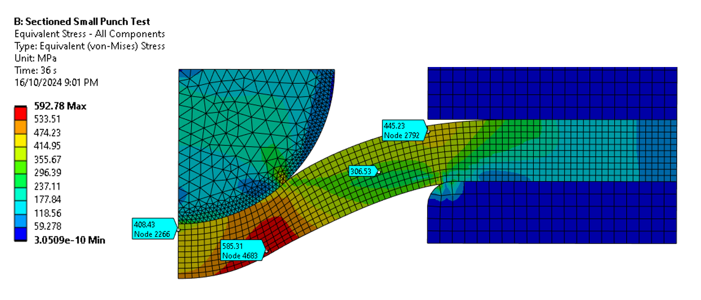
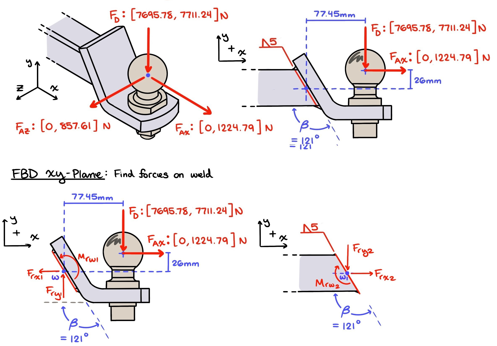
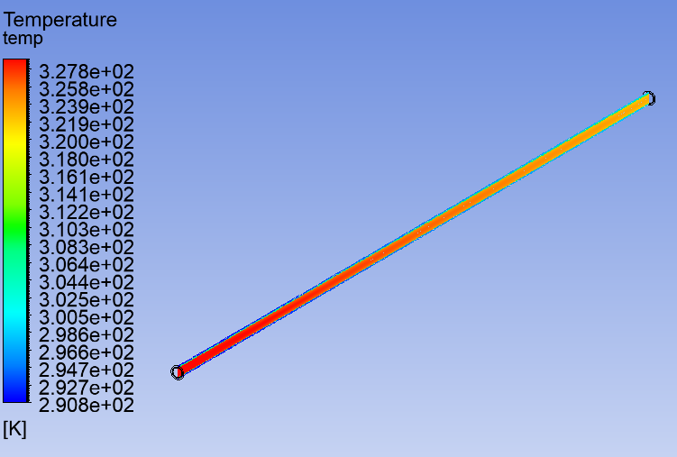

Brian Bell

I'm from Baltimore, Maryland. I moved to Brisbane,
Australia to pursue my undergraduate degree in
Mechanical Engineering. Throughout my studies at Queensland University of Technology,
I have developed a strong passion for mechanics
of materials, numerical modeling, CAD, and
tackling coding challenges.
I fervently believe in delivering high-quality
results, and have a strong desire to continuously
improve my skills, knowledge, and value. While I
am still refining my long term career goals, I
aim to contribute to innovative engineering projects
that challenge my abilities. Eager to
demonstrate my ability, I look forward to
collaborating with a dynamic engineering team to
drive the success of meaningful projects.
Critical Analysis & Refinement of the Small Punch Test

As the capstone of my engineering degree, this project explores the advancement
of the Small Punch Test (SPT) as a tool for understanding and tracking material
degradation. By integrating experimental data, computational modeling, and
numerical analysis, I am developing a more accurate and efficient method for
assessing how materials degrade over time. This work not only enhances predictive
maintenance and failure analysis in engineering systems but also highlights my
expertise in Finite Element Analysis (FEA), material science, and advanced
simulation techniques. Dive in to explore the progress so far and the potential
impact of this research on engineering diagnostics.

I led a team designing an unmanned rover for a simulated mine rescue mission, focusing on optimizing its mobility and functionality. Using SolidWorks for 3D modeling, ANSYS for finite element analysis (FEA), and detailed hand calculations, we developed a robust design capable of navigating challenging terrain. My responsibilities included overseeing concept development and conducting most design analysis. The result was a successful rover equipped with a bio-pack solution, showcasing my ability to lead technical teams and deliver innovative solutions under complex constraints.

This project investigates the structural integrity of a weld group in a real-world heavy-duty towing application. By combining analytical hand calculations with Finite Element Analysis (FEA) in ANSYS, I performed a comprehensive fatigue assessment to determine the weld’s safety under critical loading conditions. This work showcases my expertise in mechanical design, stress analysis, and computational simulation, providing valuable insights into real-world engineering validation. Explore how theoretical modeling enhances engineering reliability.

This project investigates heat exchanger performance through experimental testing, theoretical calculations, and CFD simulations in ANSYS Fluent. I analyzed shell and tube, cross flow, and double pipe configurations, optimizing thermal efficiency for industrial applications. My work highlights proficiency in heat transfer analysis, CFD, and data-driven design, offering insights for HVAC and energy systems.